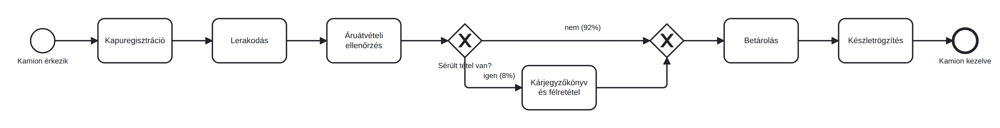

Atlas Market raktár: elég-e a kapacitás napi 135 kamionhoz?
Egy nagyobb léptékű raktári eset elemzése: kapacitásbecslés, BIMP-szimuláció, két lehetséges beavatkozás összehasonlítása és vezetői javaslat megfogalmazása.
- egy valós léptékű raktári esetet elemeztél szimuláció segítségével, napi 135 kamionnal és 46 dolgozóval;
- számszerű eredmények alapján azonosítottad a folyamat szűk keresztmetszetét, majd két lehetséges beavatkozást hasonlítottál össze;
- vezetői szempontból is értelmezted az eredményeket, és megfogalmaztad, milyen beavatkozást javasolnál a raktárvezetőnek és miért.
Az eset
Az Atlas Market webáruház központi raktárába naponta körülbelül 135 kamion érkezik áruval, reggel 6 és este 10 között, véletlenszerű eloszlásban (átlagosan 7 percenként jön egy). A raktárban 2 irodai adminisztrátor, 8 targoncavezető és 36 raktári dolgozó dolgozik. Egy kamion útja: kapuregisztráció (adminisztrátor) → lerakodás (targonca) → áruátvételi ellenőrzés (raktári dolgozó) → az esetek 8%-ában sérülés miatt kárjegyzőkönyv (raktári dolgozó) → betárolás (targonca) → készletrögzítés (adminisztrátor). A raktárvezető kérdése: képes-e a jelenlegi rendszer megfelelően kezelni a napi 135 kamion forgalmát, és ha nem, hol és milyen beavatkozásra van szükség?
Modellezési feltevés: a megadott erőforrásszám a 06:00-22:00 közötti időszakban egyidejűleg rendelkezésre álló kapacitás. A műszakbeosztást és a szüneteket most nem modellezzük külön.

Keresd meg az atlas_raktar_alap.bpmn nevű állományt a docs mappában és azzal dolgozz!
Mielőtt szimulálnál: számolj fejben
Egy kamion összesen kb. 60 percnyi targonca-munkát igényel (40 perc lerakodás + 20 perc betárolás). Napi 135 kamion = 8100 targonca-perc. A 8 targoncavezető 16 órában összesen 8 x 960 = 7680 percet tud dolgozni. Mit látsz ebből már szimuláció nélkül is?
Ez az egyszerű osztás már elárulja: a targonca-kapacitás papíron is kevesebb, mint az igény. A szimuláció azt teszi hozzá, hogy ez a hiány hogyan csapódik le: mekkora sorok alakulnak ki, mekkora lesz a csúszás, meddig tart a nap.
Állítsd be és futtasd
- Töltsd fel a mellékelt alapmodellt a BIMP-be. Esetszám: 135, érkezésköz: Exponential, Mean: 7, Minutes. Válassz hétfői kezdődátumot, 06:00 órát. A bemelegítési és lecsengési kizárás (warm-up/cool-down) legyen 0%, hogy minden eset bekerüljön az elemzésbe.
- A Timetables / Work schedules táblában a Default munkarend kezdőnapja Monday, zárónapja Sunday, kezdőideje 06:00, záróideje 22:00 legyen. Az érkezések alapmunkarendje és mindhárom erőforrás Timetable mezője ezt használja. Így naponta 16 órányi rendelkezésre állást modellezel. Ha a munka 22:00-ra nem fejeződik be, a fennmaradó feladatok a következő munkanapon folytatódnak; a modellben nincs automatikus éjszakai túlóra.
- Erőforrások: Adminisztrátor 2 fő (12 EUR/óra), Targoncás 8 fő (14 EUR/óra), Raktáros 36 fő (10 EUR/óra).
- A Tasks szakaszban mindenhol Normal eloszlást és Minutes mértékegységet válassz. Átlag/szórás: Kapuregisztráció 4/1 (Adminisztrátor); Lerakodás 40/10 (Targoncás); Áruátvételi ellenőrzés 50/15 (Raktáros); Kárjegyzőkönyv és félretétel 25/10 (Raktáros); Betárolás 20/5 (Targoncás); Készletrögzítés 7/2 (Adminisztrátor). A „Sérült tétel van?” kapu ágai: igen 8%, nem 92%. Az összevezető kapun nem adsz meg új arányokat.
- Futtasd le, és töltsd ki az alábbi összehasonlító táblázat alapváltozathoz tartozó oszlopát a saját számaiddal.
Elemzés és beavatkozás
- A: erőforrás-bővítés. Emeld a targoncások számát 8-ról 10-re, futtasd újra.
- B: a betárolás leválasztása a kamion kiszolgálásáról. Állítsd vissza a targoncavezetők számát 8-ra, a Betárolás időtartamát pedig állítsd Fixed: 0 Minutes: eértékre. Ebben a változatban ez azt jelenti, hogy a nappali folyamatban a kamion már csak átadja az árut az éjszakai betárolásra, ezért nem várja meg annak befejezését. A Készletrögzítés ebben az esetben előzetes átvételi rögzítést jelent. Az éjszakai betárolás kamiononkénti 20 perces munkája továbbra is szükséges, de annak kapacitását és költségét külön kell figyelembe venni.
- Hasonlítsd össze az alapmodellt és a két beavatkozási változatot az alábbi mutatók alapján: átlagos átfutási idő, targoncavezetők kihasználtsága, valamint az utolsó kamion kiszolgálásának befejezési ideje.
| Mutató | Alap: 8 targoncás | A: 10 targoncás | B: betárolás külön |
|---|---|---|---|
| Nappali targoncaigény / kapacitás | 8100 / 7680 perc ≈ 105% | 8100 / 9600 perc ≈ 84% | 5400 / 7680 perc ≈ 70% |
| Átlagos átfutás munkaidőben | Saját mérés | Saját mérés | Saját mérés |
| Átlagos naptári átfutás | Saját mérés | Saját mérés | Saját mérés |
| Targoncások kijelzett kihasználtsága | Saját mérés | Saját mérés | Saját mérés |
| Utolsó kamionfolyamat befejezése | Saját mérés | Saját mérés | Saját mérés |
- Az alapmodellben a nappali targoncakapacitás nem elegendő a terhelés kezelésére. A raktári dolgozók alacsonyabb átlagos kihasználtsága ugyanakkor önmagában nem indokol létszámcsökkentést: ehhez a csúcsterhelést, az egyéb feladatokat és a tényleges rendelkezésre állást is figyelembe kell venni.
- A két beavatkozás költségszerkezete eltér. Az A változat két további nappali targoncakapacitást igényel. A B változatban a nappali folyamatból kivett betárolási munka nem szűnik meg, hanem éjszakára kerül át. Ennek volumene napi 135 × 20 = 2700 targonca-perc, vagyis 45 munkaóra. Ha ezt például négy óra alatt kell elvégezni, már elméletileg is legalább 12 egyidejű targoncakapacitásra van szükség, és az ingadozások miatt további tartalék is indokolt lehet. A gyorsabb nappali kiszolgálásnak tehát külön kapacitás- és költségigénye van.
- A szimuláció legfontosabb előnye, hogy a lehetséges beavatkozások hatása még a tényleges döntés előtt összehasonlítható. Így nemcsak azt látjuk, melyik megoldás javítja jobban a nappali folyamatot, hanem azt is, hogy ennek milyen erőforrás- és költségkövetkezményei vannak.